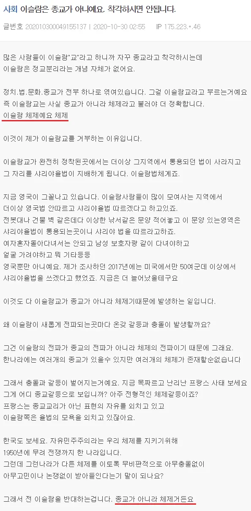

댓글들 보면 다양하게 보이는데 본질적인 문제는 저 사람이 한국어로 컨시어지 업무를 수행할 수 있는가? 부족하다 한국어 공부 더 해 로 접근하는 개붕이들도 보이고 그냥 반사작용하는 개붕이들도 보이고.. 아프가니스탄에서 조흐라란 이름 가지고 있으면 아마 하자라계나 우즈벡계 아프간인인 것 같은데, 그나마 북부 사람이라 히잡쓰고다니지, 파슈툰이었으면 외부활동도 안함
다문화 하자는데 솔빅히 한국은 힘들다
조나단 같은 사람 데려오는데 걔들은 다인종이지 다문화가 아님 ~~하면 한국인이지가 애당초 단일문화인거 인정하는 꼴이고 다인종 국가는 찬성하지만 다문화는 멀다
우리나라는 단일문화다 동화하는 사람들을 환영한다